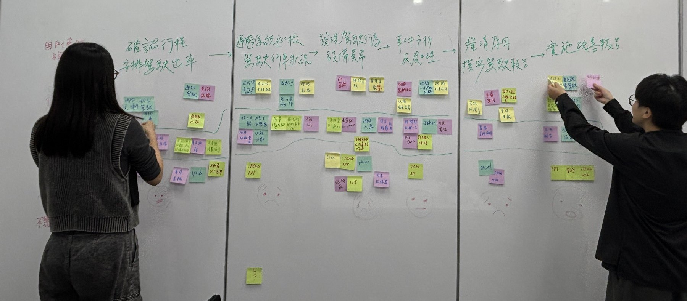
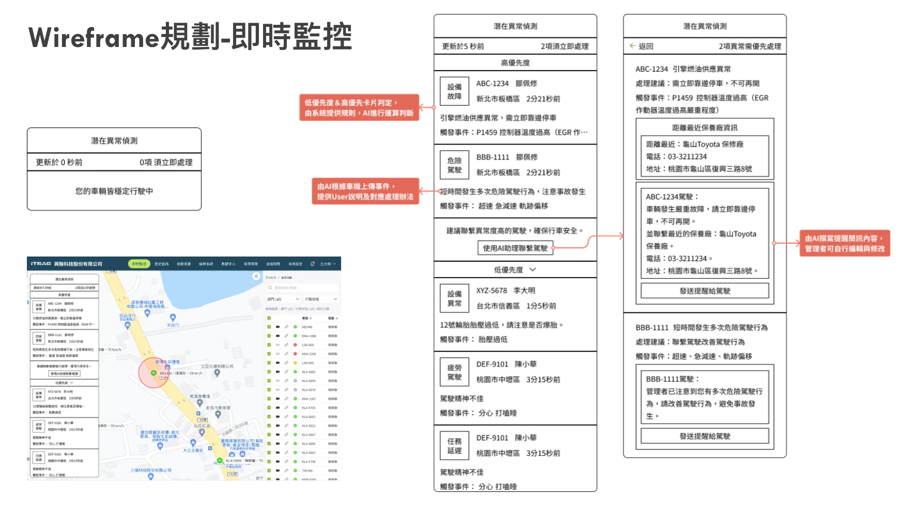
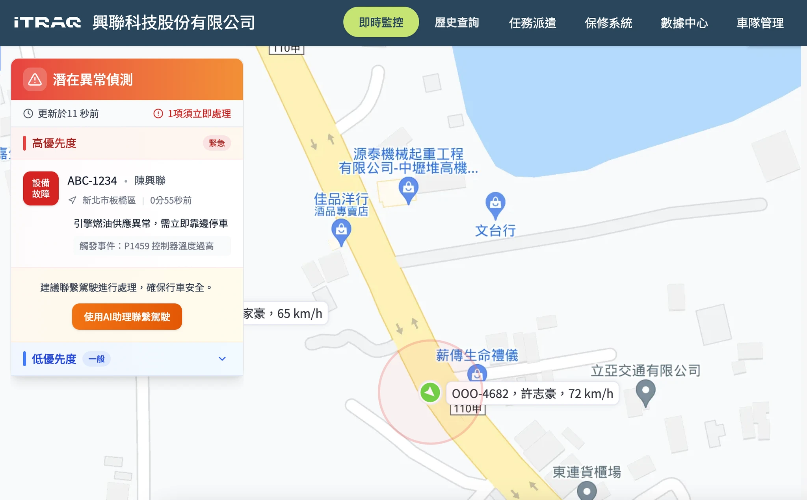

How I Work
好的設計不是靈感，
而是一套可以重複的方法。
我的流程不是固定的步驟，而是依專案規模調整的思考順序：先釐清需求與使用者，再定義問題、設計方案，最後用測試與數據驗證。時程緊的專案我會縮短研究、提早做出可以討論的畫面，但不會跳過「確認問題」這一步。
-
01
探索
Discover · 約占 25%先理解人與問題，再談解法。
關鍵問題：使用者真正卡住的地方在哪裡？
- 利害關係人訪談
- 使用者深度訪談
- 問卷與數據分析
- 競品分析
AI：整理逐字稿、快速掃描競品
-
02
定義
Define · 約占 20%把雜訊收斂成一個清楚的問題。
關鍵問題：我們要優先解決哪一個問題？
- 親和圖分類
- 人物誌
- 使用者旅程地圖
- HMW 問題定義
AI：協助歸類資料、挑戰假設
-
03
設計
Design · 約占 35%從低保真快速發散，再逐步收斂。
關鍵問題：什麼樣的方案最能達成目標？
- 資訊架構與流程圖
- 線框稿與方案比較
- 高保真介面
- 互動原型
AI：大量發想版面、產生真實文案
-
04
驗證
Validate · 約占 20%用證據檢驗設計，持續迭代。
關鍵問題：設計真的解決問題了嗎？
- 可用性測試
- A/B 測試
- 上線數據追蹤
- 設計回顧
AI：整理測試紀錄、分析回饋
時間占比為參考值，會依專案規模調整。
Workshop
流程實例：一場內部工作坊
以「監控安全駕駛行為」為題，和團隊成員把探索、定義到設計的流程實際走過一遍：從人物誌與使用者旅程地圖收斂出優先順序，再把選出的機會點做成「潛在異常偵測」的介面。
-
01
聚焦對象與問題
以中小型車隊的第一線管理者為對象，先問一個問題：管理駕駛行車安全時，會遇到哪些痛點？
鍾先生 汽車貨運業 · 車隊管理者 · 45 歲 · 桃園市 · 科技適應度中中小型車隊的第一線管理者（車輛 10–30 輛），兼任調度與行政角色，重視效率與即時資訊。
工作狀態- 早上 8 點到現場，用 App 確認各車出勤狀況，異常時以 LINE 聯繫駕駛
- 行程結束後回辦公室，花 1–2 小時調閱影像、查看軌跡
- 月底彙整里程、油耗、出勤時間等報表給老闆
核心需求- 隨時隨地知道車輛位置、駕駛行為、是否偏離路線
- 發生異常（事故、超速、停太久）時立即收到通知或調閱影片
- 每月彙整車輛營運報表，了解車輛使用狀況
挫折- 系統功能很多，但不太熟、不會使用
- 希望保修及事件能即時回報通知
- 行程軌跡無法匯出，不方便分析駕駛行程
- 營運月報無法做單車油耗等深入分析
- 定位飄移、影像連線斷斷續續
管理媒介車隊管理 AppLINE車輛運行交接日報表車隊管理系統工作坊提問：使用者在進行駕駛行車安全管理時，可能會發生哪些痛點？
-
02
共創使用者旅程地圖
和團隊在白板上拆解行駛前、行駛中、行駛後的流程，再整理成旅程地圖，標出行為、痛點、接觸點、情緒與機會點。

工作坊現場 行駛前行駛中行駛後使用流程確認行程、安排駕駛出車透過系統巡檢駕駛行車狀況發現駕駛行為／設備異常事件分析及處理釐清原因、撰寫駕駛報告實施改善措施使用者行為· 檢查輪胎、油量等車況
· 裝卸貨物
· 駕駛報到、領單出發· 查看車輛定位
· 查看行駛軌跡
· 查看即時影像
· 查看車輛設備狀態· 接收系統推播的異常通知
· 主動發現異常
· 聯繫駕駛了解狀況· 調閱行駛影片
· 查詢行駛軌跡
· 評估是否需送修· 每日／週／月彙整車輛使用與安全報告· 進行危險駕駛教育訓練
· 獎勵優良駕駛痛點· 沒有落實檢查 SOP，通常只看外觀，無法細查零件· 要手動切換多車、多功能畫面，花很多時間
· 無法時時刻刻盯著系統· 沒注意到通知，延遲處理
· 異常提醒很多，不知道先處理哪個· 影像載入慢、找關鍵片段耗時
· 多因素評估，釐清原因很花時間· 手動整理，欄位分散、難分析· 沒有客觀指標，靠人為判斷接觸點· 倉儲車庫
· LINE
· 車輛 SOP 表單· iTRAQ App
· 其他車隊管理系統· iTRAQ App
· LINE（聯繫駕駛）· iTRAQ App
· iTRAQ Web
· 保修廠（設備異常時）· 事件評估報告
· 駕駛日誌· 辦公室
· iTRAQ App
· iTRAQ Web感受與情緒平穩平穩驚訝不滿平穩滿意機會點· 啟動時自檢車體數值，提供檢查結果與注意項目
· 透過 LINE 推送啟動檢核結果· 優化顯示排序，高風險車輛優先
· 設立潛在異常專區，協助快速評估· 由 AI 綜合健診異常事件，依風險等級推送提醒與處理建議
· 透過 LINE 推送異常通知· AI 自動標記異常軌跡與影像
· 彙整 10 秒重點影像
· 一鍵聯繫保修廠並同步異常資訊· 自動總結行程並彙整改善建議
· 優化駕駛安全分數，生成個人化訓練建議· 優良駕駛排行榜（駕駛行為、油耗）整理後的使用者旅程地圖：監控安全駕駛行為 -
03
排出優先順序
把旅程地圖找到的機會點放進「影響 × 投入」矩陣，分出趕快去做、有空再做與選擇不做。
趕快去做高影響 · 低投入帳號綁定 LINE 推送通知高影響 · 高投入潛在異常專區行為風險等級評估AI 標記異常影像每日行駛建議有空再做低影響 · 低投入車輛啟動自檢表一鍵聯繫保修廠、推送車況駕駛改善建議彙整濃縮精華影像駕駛行駛排行榜選擇不做低影響 · 高投入風險排序 UI 優化影響 × 投入矩陣。藍色為工作坊中特別標示的兩個項目。 -
04
Wireframe 規劃
在即時監控加入「潛在異常偵測」：依高、低優先度列出異常，由 AI 說明事件與處理建議，並草擬可編輯的駕駛提醒。

Wireframe 規劃：即時監控 -
05
介面設計
高保真介面把最緊急的異常放在最上方，一眼看到車輛、位置、原因與下一步，並可直接用 AI 助理聯繫駕駛。

潛在異常偵測的介面設計產出
Human × AI
我如何與 AI 協作
我把 AI 當成研究助理與發想夥伴：用它整理資料、快速產出多個方向，把省下來的時間用在理解使用者、與團隊溝通和做決策。AI 給的是選項，判斷與責任仍然在我身上。
交給 AI：加速
量大、重複、需要快速發散的工作
- 整理訪談逐字稿與會議紀錄
- 彙整競品資訊與市場資料
- 大量發想版面與文案方向
- 產生測試資料與原型
- 初步分析回饋與數據
由我主導：判斷
需要同理、脈絡與責任的工作
- 與使用者面對面訪談、建立同理
- 定義問題與設定優先順序
- 在多個方案中做取捨與決策
- 確保體驗一致、包容且合乎倫理
- 對最終設計負責，並向團隊說明理由
協作循環
-
01 我
定義問題
寫清楚脈絡、限制與要的產出，給 AI 好的起點。
-
02 AI
產生選項
快速產出多個方向或整理大量資料。
-
03 我
判斷與修正
查證內容、挑出可行方向，加入專業與脈絡。
-
04 使用者
驗證
用真實的使用者與數據檢驗，而不是只相信 AI。
驗證結果不理想時，回到第一步重新提問，直到找到站得住腳的方案。
使用 AI 的原則
AI 能放大效率，也能放大錯誤。這是我為自己設下的界線。
保護資料
不把客戶機密與使用者個資放進 AI 工具，必要時先去識別化。
一定查證
AI 的摘要與數據都回到原始資料核對，不直接引用。
透明揭露
在案例中說明哪些部分使用了 AI，以及我做了什麼判斷。
決策權在人
AI 提供選項，但最終設計與責任由我承擔。